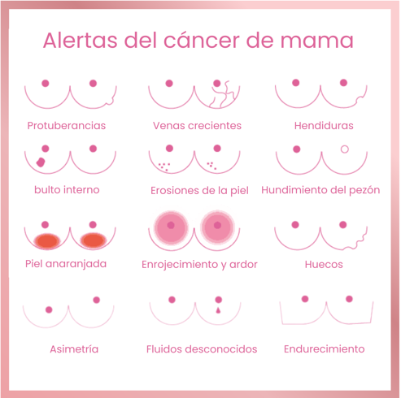
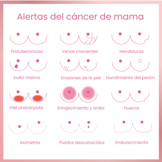

Prevención
El cáncer de mama
El cáncer de mama es una de las principales causas de mortalidad en mujeres argentinas, con más de 21,000 nuevos casos diagnosticados al año. Este tipo de cáncer afecta mayormente a las mujeres, pero también puede presentarse en hombres.
Se ha demostrado que cuando el cáncer de mama es detectado de manera temprana, es altamente curable. Entre los factores de riesgo, algunos no son modificables, como ser mujer, la edad o la genética; mientras que otros, como el sedentarismo, el tabaquismo, el sobrepeso y el consumo de alcohol, son factores que podemos cambiar para reducir las probabilidades de desarrollar la enfermedad.
¿Cómo realizar el autoexamen mamario?
El autoexamen mamario es una técnica sencilla que puede ayudar a las mujeres a conocer mejor sus cuerpos y detectar cambios visibles o palpables en las mamas. Sin embargo, es importante aclarar que el autoexamen no sustituye a la mamografía, que es el método más efectivo para detectar el cáncer de mama en sus etapas iniciales.
Se recomienda que las mujeres mayores de 50 años o con factores de riesgo realicen una mamografía anual como parte de su rutina de cuidado de la salud.
Pasos para el autoexamen
Frecuencia: Realiza el autoexamen una vez al mes, preferiblemente antes o después de ducharte.
- Observación: Frente a un espejo, observa si hay cambios en la forma, tamaño o textura de tus mamas.
- Palpación: Utiliza las yemas de tus dedos para palpar suavemente cada mama en busca de bultos o nódulos.
- Posiciones: Repite el proceso tanto de pie como acostada, presionando con diferentes niveles de intensidad.

Signos de alerta del cáncer de mama
El cáncer de mama es una enfermedad que, cuando se detecta de manera temprana, ofrece mayores posibilidades de tratamiento exitoso. Es importante prestar atención a los cambios en las mamas, como:
- Bultos o nódulos palpables.
- Endurecimientos.
- Cambios en la textura o color de la piel (piel de naranja).
- Retracción del pezón o secreción.
La autoexploración mensual es un paso clave para conocer el estado de las mamas y detectar cualquier anormalidad, pero no reemplaza la importancia de realizarse una mamografía anual.

Recuerda: si detectas cualquier cambio, es esencial que consultes con un médico.
Mitos y realidades sobre la prevención
❌ Mito: Los desodorantes y antitranspirantes causan cáncer de mama.
✔️ Realidad: No hay evidencia científica confiable que demuestre que los desodorantes o antitranspirantes aumenten el riesgo de cáncer de mama.
❌ Mito: Usar sostén con varillas aumenta el riesgo de cáncer de mama.
✔️ Realidad: No hay evidencia científica que sugiera que los sostenes, con o sin varillas, aumenten el riesgo de cáncer de mama.
❌ Mito: Los implantes mamarios aumentan significativamente el riesgo de cáncer.
✔️ Realidad: Los implantes mamarios no aumentan significativamente el riesgo de cáncer de mama, aunque pueden hacer que las mamografías sean más difíciles de interpretar.